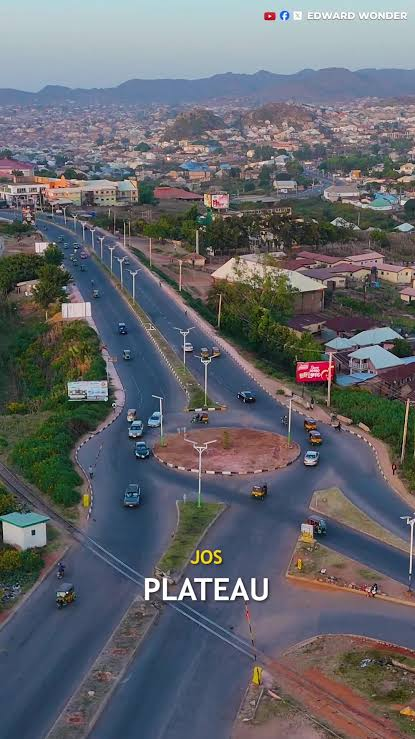
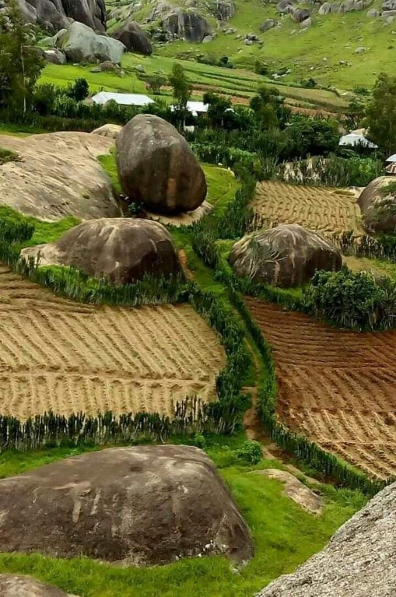

Jos is in Plateau state, which is my State of origin, I schooled there, made a lot of friends there, the weather is amazing, the hills and mountains, the greenery, the food, the fruits, and the people, oh the people, they are welcoming and accomodating. Alot of people I know come to Jos City and they never want to leave. I love Jos and I really miss it.

